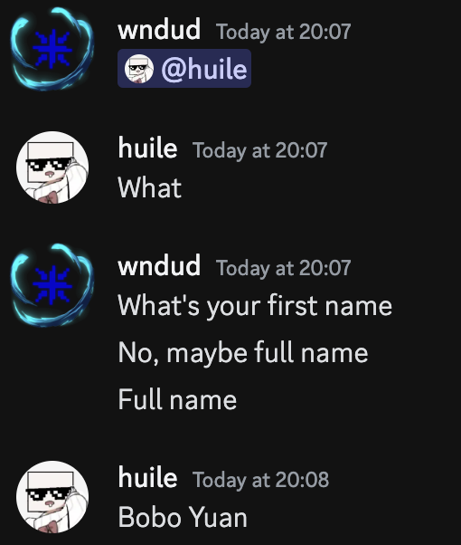

Bobo Yuan, confess your crimes! 💀
with evidence.
A response to Bobo's website:
Bobo's nonsense website link
Preamble
Yuan Bobo (“Yuan Bobo”), has assembled his website (“Website”), accusing me (“I”) of being homosexual (“Gay”) with Arthur.
His website has contained several accusations that falsely stated that I am in a homosexual relationship with a classmate Arthur,
which is deceitful, as he provided no evidence, nor any witnesses to validate his claims.
This website is for destroying Bobo's claims, while proving what is right and wrong, with 'evidence-based' claims.
Response to "The GAY incident":
By looking at the website’s (“http://124.47.0.106/”) first false claim, Yuan Bobo states
that I “took advantage of our friendship to steal and forge evidence claiming that I’m (Yuan Bobo) gay.”
He also mentioned that I knew it was a joke and went on to spread the misinformation.
Paul K. McKenna mentions this a lot: “The first time is a mistake, the second time is a decision, and the third time is a habit.”
As Paul mentioned, the first time, it may be a mistake, but this carries on:
(10 Evidences from the Discord group chat ("No one meiyou qian"))
As we can already see, Yuan Bobo has ‘clearly’ said that he somewhat has homosexual feelings
towards me. Although Yuan Bobo thought this was a ‘joke’, expressing his feelings towards a male person
towards the same person, in the same group chat, with the same intentions, states that this is not
a joke at this point and should be considered as that he is indeed gay.
“There’s only one possibility: it’s to cover up the fact that James Park
is gay and involved with Arthur. This is unforgivable!!!”
An extract from the website.
His website states that there’s only one possibility where I accuse him of being gay, with it being
the fact that I’m trying to cover up the fact that I’m gay. However, looking at his website, there is
no direct evidence shown in his website that clearly states that I’m gay.
Plus, as I mentioned earlier, the first might be a joke, but the second, and third? It’s not.
This means that if Yuan Bobo wanted to make a comeback, he would need at least two more
pieces of evidence to support his claim, plus he would need to invite people to the group chat if he wanted to prove his evidence.
If you are wondering if my pieces of evidence are real, please DM wndx2 on Discord, and I will add you to the group chat.
Response to "The Genshin Impact Incident":
In response to his second false claim of the “Genshin Incident”, again, he has no evidence, nor any
witnesses to prove that he does not play Genshin. He stated,
“At school and on Discord, I’ve been falsely accused multiple times of having played Genshin
Impact, all of which started from nothing more than a joke.”
An extract from the website.
Firstly, and most importantly, he has no evidence to support his arguments, and without even
having a witness, he could not prove that his arguments are true.
However, while I do not have any evidence, there are people (Arthur, for example,) who have
witnessed the scene where Yuan Bobo has directly said that his Discord nickname “huile” is from
his friend wanting him to play Genshin Impact, during a conversation where we were talking about people’s nicknames.
Secondly, during week 6, people witnessed Yuan Bobo’s screen, where the game Genshin Impact
was downloaded in the past, as his iOS App Store, on the Genshin Impact page, has displayed a
cloud icon, with an arrow pointing downwards. If you have used iOS, or MacOS before, you’d know
that the app was downloaded before, but if you haven’t used it before, basically in the iOS App
Store, if you have downloaded an app in the past, the App Store keeps track of your downloads,
and displays the icon (mentioned before), instead of a blue button saying “Get”.
This is still on his app store; If you ask Bobo to open the App Store, and tell him to open Genshin Impact,
he would be scared to death 💀
Lastly, during his school days, his friend Arthur witnessed a ‘CLEAR’ moment when Yuan Bobo
tried to download Genshin Impact on his laptop, by searching “Genshin Impact for MacBook”, on the internet.
Additionally, his website states that my accusing Yuan Bobo of playing Genshin is just a cover-up
for the fact that I play Blue Archive, and without even a piece of proper evidence or a witness, he
cannot back his point on his website that I play Blue Archive.
Furthermore, there was a scene where I recognised a character from the game Blue Archive,
where from then, Yuan Bobo has created this nonsense to back his points. However, knowing a
single character from a game does not mean that an individual plays that game. If you need a
comparison, it’s like saying you play Honkai Star Rail, just because you know the name of the game
Response to "The Lemon Incident":
As a reply to the “Lemon Incident”, it is true that I have released the LemonBot to the public,
where users could earn lemons (virtual currencies), and spend them.
“However, roughly a week after Lemon’s release, development on its economic reset system was abruptly discontinued.”
An extract from the website.
To back my claims, this is again not true. The LemonBot’s development was indeed not abruptly
discontinued but was ‘stopped’, due to my more urgent studies compared to the bot development.
There is a difference between ‘discontinue’, and ‘stop’, where discontinue means to stop
something permanently (in most cases), while stop means to stop something temporarily; and
since the full context wasn't given, I can assume that he was meaning ‘stop forever’ when Yuan
Bobo meant to discontinue, which is not true, as I did start developing right after the tests ended.
“... and after I lost all my Lemons in bets, he mocked me.”
An extract from the website.
Think about this, this is a ‘virtual currency’, where lemons hold no monetary value in real life. This
means that the currency ‘lemons’ is just a number in the system that means nothing if you think
critically about this. Again, think about this: When someone loses all their ‘virtual currency’ while
betting, who wouldn’t laugh?
“To make things worse, he stole my 2088 Lemons! This is nothing short of robbery!!! 😠 ”
An extract from the website.
Finally, again, this is a virtual currency bot, where lemons hold no monetary value, meaning that it
is indeed okay if someone robbed your lemons because nothing would happen.
Plus, there is a command called /deposit, where it deposits your money so that no one can rob
your lemons. This indicates that he has publicly stated that he had over 2000 lemons (this is
considered a lot), meaning he basically said, “Come rob me guys, I have 2000 lemons.”
Therefore, this is clearly Yuan Bobo’s fault for not depositing the 2000 lemons that he had.
Response to "The Monketype Incident":
The ‘monkeytype incident’ is when I changed his setting to make it have bright colours, and
‘without permission’ is misleading information. During that time, he asked me if he could have
one of my themes, so I said “Yeah, alright.”, and sent him the link to the theme.
Again, it is not my fault that I had over 5 themes, and he didn’t mention a specific one, which gives
me the right to choose any from my list - and with that, I gave him the bright-coloured one.
Furthermore, he has stated that I didn’t change his settings after the theme, and it is not my fault
for denying his request - I have the right to object to his request, as:
1. I already helped: I accommodated Yuan Bobo’s original request of changing his theme, without specifying a specific theme.
2. It is not my responsibility: As I have not agreed to change back your settings after the use, it’s not my obligation to do so.
Response to "The Discord Spam Message Incident":
The "Discord Spam Message Incident" is when I spammed Yuan Bobo in DMs, using a Python &
Applescript program. He argued that I spammed him in the middle of the night without proper evidence again.
Plus, he has stated that I use a bot & a script to spam him, and just to clarify, this is not a bot, it’s
an alt account created for spamming purposes, which first proves that this is not a bot, as a script,
and a Discord bot are two different things.
+ Kieran has stated that he could've just used DND ("Do Not Disturb Mode"), when he was getting spammed,
or could've blocked me (like he said); which implies that he has neglected his phone from being message bombed.
It's like leaving your iPhone 16 Pro Max outside on the road on purpose, letting it get run over by a car,
and telling the judge that he purposely ran over it, when you're the one who left it there on purpose.
Postamble
“A gentleman’s revenge can wait ten years!!! James, although I didn’t hack your computer to delete your evidence, I can make a webpage to mock you.”
Quote from “Yuan Bobo”, in his misleading website without even a single evidence.
“A gentleman’s revenge was just destroyed by me - two hours after the release of the revenge;
I hope to see more of those ‘non-evidence-based’ arguments in the next ten years.
I could've leaked your address here, Bobo. You should be thankful fr 💀
(not) Sincerly,
James Park.
(This is not a joke)
